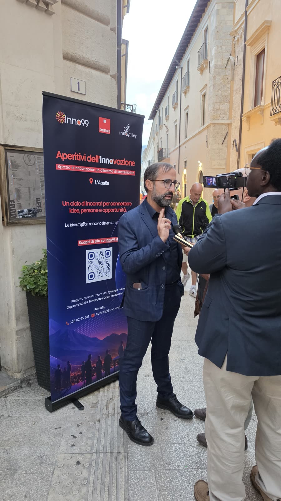
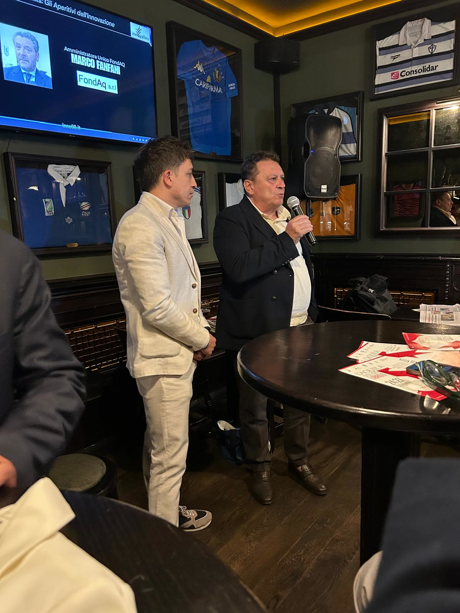
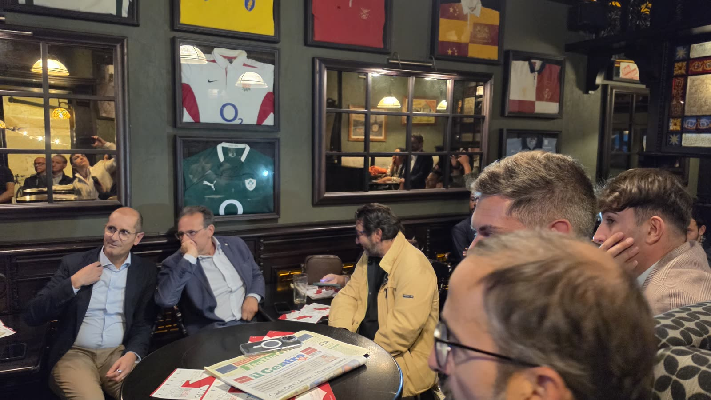
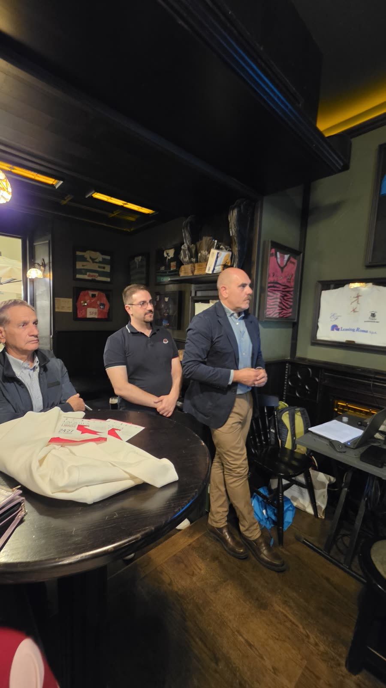
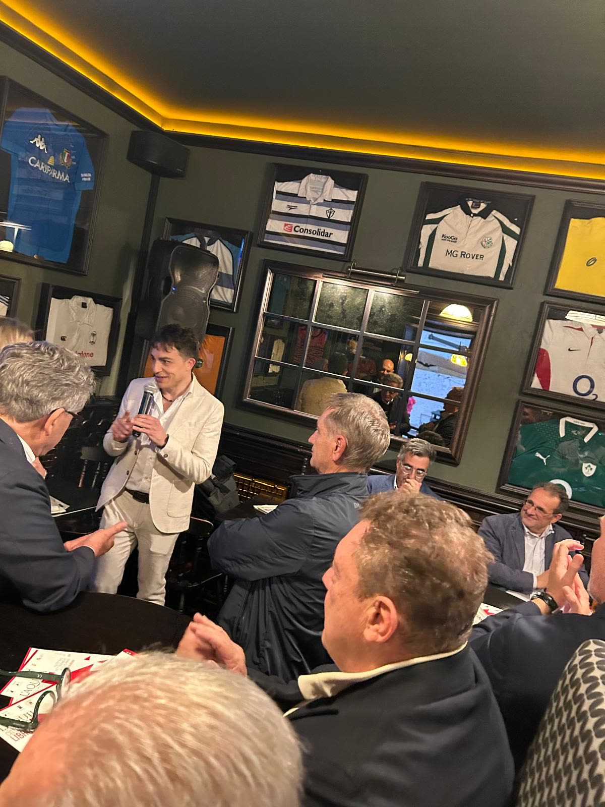
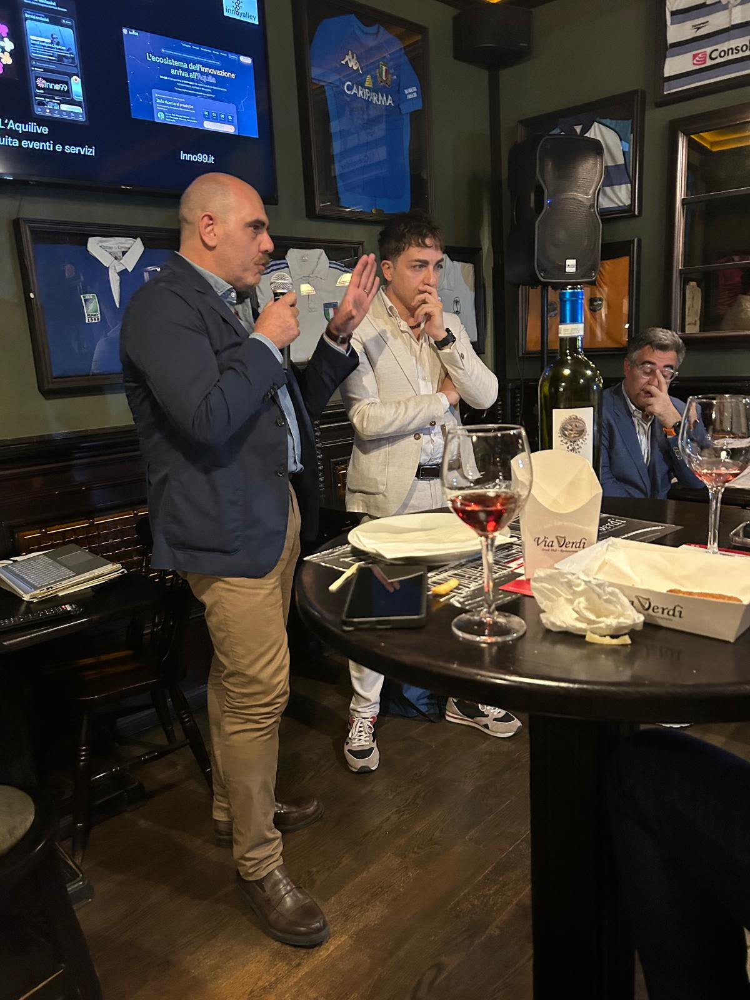

Inno99 · Inno Talks #2 · L'Aquila
Giovedì 24 settembre l'Irish Pub Via Verdi ha ospitato il secondo Inno Talk di Inno99, gli aperitivi dell'innovazione ideati da Mirko Rocci e Federico Fioriti per Innovalley. Oltre 40 persone per una serata dedicata al passaggio dalla ricerca al prodotto, aperta e condotta da Mirko Rocci, fisico e curatore del ciclo. Qui trovate la diretta integrale, le foto e il resoconto degli interventi.
La registrazione completa della serata, circa 85 minuti.






In apertura hanno portato i loro saluti il consigliere comunale Claudia Pagliariccio, il direttore generale di ARPA Abruzzo Maurizio Dionisio e l'Amministratore Unico di FondAq Marco Fanfani. L'assessore regionale alla Cultura Roberto Santangelo, che non è potuto intervenire, ha fatto comunque pervenire i suoi saluti. Roberto Romanelli, direttore generale del Tecnopolo d'Abruzzo, ha raccontato come il polo, che oggi ospita 45 realtà e quasi 1.800 persone, accompagni le imprese dalla ricerca fino al mercato, anche all'estero.
Il keynote è stato affidato al prof. Michele Flammini, che è stato anche docente di informatica di Mirko Rocci all'università. Rocci ha scelto di non presentarlo, per lasciare che fosse il suo percorso a parlare, dalla ricerca teorica al Gran Sasso Science Institute fino allo spin-off Gunpowder, che oggi dà lavoro a circa 70 persone all'Aquila. Ha mostrato anche come qualità della vita e innovazione di una città crescano insieme.
«La ricerca diventa prodotto quando persone e organizzazioni costruiscono fiducia, imparano a superare ostacoli e sfide e lavorano insieme su progetti di interesse comune.»Michele Flammini
Romanelli ha poi introdotto due imprese del Tecnopolo. Con l'ing. Stefano Tennina, West Aquila ha presentato la SHM-BOARD per il monitoraggio strutturale degli edifici, nata dopo il terremoto del 2009 e oggi attiva in una trentina di siti, dalla Torre Civica dell'Aquila alle Etihad Towers di Abu Dhabi. Con il dott. Alejandro Chaparro Blanco, Accyourate Group ha mostrato dal vivo la maglietta YouCare per l'elettrocardiogramma continuo e ha raccontato otto anni di lavoro in tre lezioni. La tecnologia da sola non basta, per crescere servono i partner giusti e alla fine sono le persone a fare la differenza.
In chiusura Mirko Rocci ha indicato il filo comune dei tre interventi, i dati raccolti dai sensori e l'intelligenza artificiale che li interpreta. Federico Fioriti ha poi ricordato come è nato Inno99, tre anni fa, da un foglietto su cui Rocci aveva scritto l'idea di incontri per raccontare le eccellenze dell'Aquila. Il format è già stato richiesto a Pescara e a Chieti.
Rocci ha ringraziato il Tecnopolo d'Abruzzo e Roberto Romanelli, senza il cui supporto la serata non avrebbe avuto queste dimensioni, le imprese, il prof. Flammini e Federico Fioriti. Il prossimo Inno Talk è previsto per ottobre.
Nel resoconto trovate i contenuti di ogni intervento, con le citazioni principali.